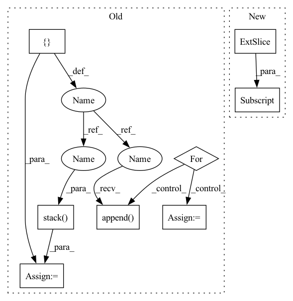

Pattern ID :7590

Before Change
q_loss = (q_delta * sampling_weigths).mean()
bg_mask = 1 - obs["fg_mask"]
q_bg_pred = []
for b in range(bg_mask.shape[0]):
y, x = torch.where(bg_mask[b])
i = torch.randint(low=0, high=len(y), size=()).item()
q_bg_pred.append(qs_pred[b, 0, y[i], x[i]])
q_bg_pred = torch.stack(q_bg_pred)
q_bg_delta = torch.nn.functional.smooth_l1_loss(
q_bg_pred,
torch.zeros_like(q_bg_pred),
reduction="none",
After Change
q_bg_delta = torch.nn.functional.smooth_l1_loss(
qs_pred[:, 0] * (1 - obs["fg_mask"].float()),
torch.zeros_like(qs_pred)[:, 0],
reduction="none",
).mean(dim=(1, 2))
q_bg_loss = (q_bg_delta * sampling_weigths).mean()
In pattern: SUPERPATTERN
Frequency: 3
Non-data size: 8
Instances
Fragment ID: 25274513
Project Name: wkentaro/safepicking
Commit Name: da3dc0dab7349f8d66d960e74177c69c60f594b6
Time: 2021-05-07
Author: www.kentaro.wada@gmail.com
File Name: examples/grasp_with_intent/agent.py
M Class Name: DqnAgent
N Class Name: DqnAgent
M Method Name: _update_q(2)
N Method Name: _update_q(2)
M Parent Class: Agent
N Parent Class: Agent
M File Name: examples/grasp_with_intent/agent.py
N File Name: examples/grasp_with_intent/agent.py
M Start Line: 182
M End Line: 232
N Start Line: 182
N End Line: 225
'>
Before Change
q_loss = (q_delta * sampling_weigths).mean()
bg_mask = 1 - obs["fg_mask"]
q_bg_pred = []
for b in range(bg_mask.shape[0]):
y, x = torch.where(bg_mask[b])
i = torch.randint(low=0, high=len(y), size=()).item()
q_bg_pred.append(qs_pred[b, 0, y[i], x[i]])
q_bg_pred = torch.stack(q_bg_pred)
q_bg_delta = torch.nn.functional.smooth_l1_loss(
q_bg_pred,
torch.zeros_like(q_bg_pred),
reduction="none",
After Change
q_bg_delta = torch.nn.functional.smooth_l1_loss(
qs_pred[:, 0] * (1 - obs["fg_mask"].float()),
torch.zeros_like(qs_pred)[:, 0],
reduction="none",
).mean(dim=(1, 2))
q_bg_loss = (q_bg_delta * sampling_weigths).mean()
'>
Fragment ID: 25274512
Project Name: wkentaro/reorientbot
Commit Name: da3dc0dab7349f8d66d960e74177c69c60f594b6
Time: 2021-05-07
Author: www.kentaro.wada@gmail.com
File Name: examples/grasp_with_intent/agent.py
M Class Name: DqnAgent
N Class Name: DqnAgent
M Method Name: _update_q(2)
N Method Name: _update_q(2)
M Parent Class: Agent
N Parent Class: Agent
M File Name: examples/grasp_with_intent/agent.py
N File Name: examples/grasp_with_intent/agent.py
M Start Line: 182
M End Line: 232
N Start Line: 182
N End Line: 225
'>
Before Change
x = q + self.num_q * r
Mvt = self.Mv.unsqueeze(0)
p = []
Mv = []
for qt, xt in zip(q.permute(1, 0), x.permute(1, 0)):
kt = self.k_emb_layer(qt)
vt = self.v_emb_layer(xt)
wt = torch.softmax(torch.matmul(kt, self.Mk), dim=-1)
// Read Process
rt = (wt.unsqueeze(-1) * Mvt).sum(1)
ft = torch.tanh(self.f_layer(torch.cat([rt, kt], dim=-1)))
pt = torch.sigmoid(self.p_layer(ft)).squeeze()
// Write Process
et = torch.sigmoid(self.e_layer(vt))
Mvt = Mvt * (1 - (wt.unsqueeze(-1) * et.unsqueeze(1)))
at = torch.tanh(self.a_layer(vt))
Mvt = Mvt + (wt.unsqueeze(-1) * at.unsqueeze(1))
p.append(pt)
Mv.append(Mvt)
p = torch.stack(p, dim=1)
Mv = torch.stack(Mv, dim=1)
return p, Mv
After Change
self.f_layer(
torch.cat(
[
(w.unsqueeze(-1) * Mv[:, :-1]).sum(-2),
k
],
dim=-1
'>
Fragment ID: 25274509
Project Name: hcnoh/knowledge-tracing-collection-pytorch
Commit Name: c42b01b83dbe54e94f4294009fbfe8bd910e3638
Time: 2021-10-06
Author: rhc0624@gmail.com
File Name: models/dkvmn.py
M Class Name: DKVMN
N Class Name: DKVMN
M Method Name: forward(3)
N Method Name: forward(3)
M Parent Class: Module
N Parent Class: Module
M File Name: models/dkvmn.py
N File Name: models/dkvmn.py
M Start Line: 40
M End Line: 66
N Start Line: 50
N End Line: 87